Guida in italiano per installare, configurare e utilizzare DCS-DTC
per waypoint, radio preset, CMS e dati missione nei moduli compatibili.
Prima di iniziare
DCS-DTC è uno strumento che permette di preparare e caricare
dati missione direttamente nei moduli compatibili di DCS World.
Il programma consente di gestire waypoint, steerpoint,
radio preset, countermeasures e altre configurazioni operative
prima dell’ingresso in cockpit.
La guida seguente è una versione italiana adattata per
Flying Donkeys Virtual Squadron, basata sulla documentazione
ufficiale del progetto e sulle procedure operative della squadriglia.
DTC è particolarmente utile nei moduli moderni come
F-16C Viper,
F/A-18C Hornet,
AH-64D Apache
e altri velivoli compatibili con caricamento dati missione.
Segui gli step nell’ordine. Prima di una missione verifica sempre
waypoint, radio preset, CMS e dati operativi indicati nel briefing.
1
Scarica DTC
Apri la pagina ufficiale delle release GitHub e scarica
l’ultima versione stabile di DCS-DTC.
Nella maggior parte dei casi il file consigliato è
l’installer .msi.
Evita versioni non ufficiali o repository modificati:
utilizza sempre i link condivisi dalla squadriglia o
il repository ufficiale del progetto.
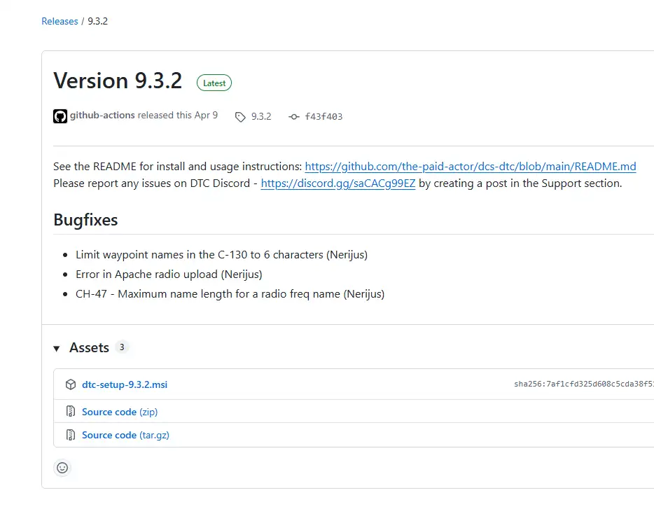
Download della release ufficiale DCS-DTC.
2
Installa DTC
Avvia l’installer scaricato e completa il wizard.
Se Windows mostra SmartScreen o richieste di sicurezza,
verifica che il file provenga dal repository ufficiale.
Alcune versioni possono richiedere il
.NET Desktop Runtime.
In caso di errore all’avvio, installa il runtime richiesto
e riapri il programma.
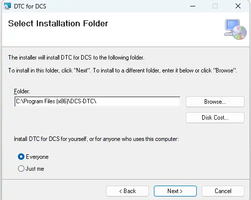
Installazione iniziale del tool DCS-DTC.
3
Configura DCS e Saved Games
Al primo avvio controlla che DTC rilevi correttamente
la cartella Saved Games del tuo DCS.
Il programma utilizza questi percorsi per leggere
dati missione e configurazioni dei moduli.
Se utilizzi più installazioni DCS,
verifica che il profilo corretto sia selezionato
prima di procedere.
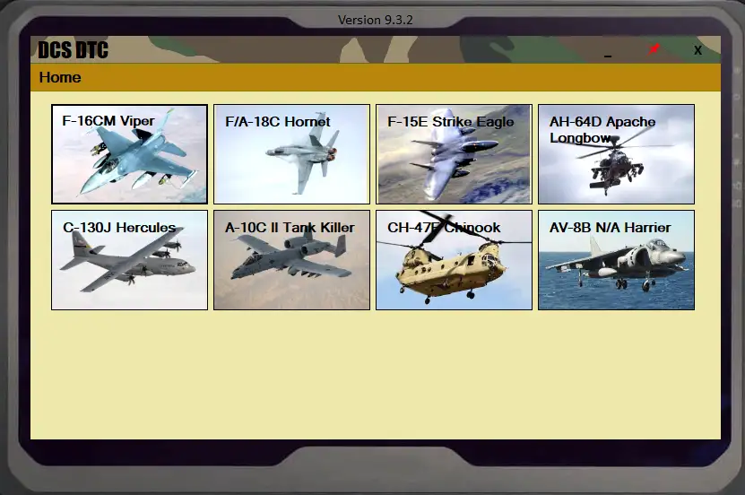
Configurazione dei percorsi DCS e Saved Games.
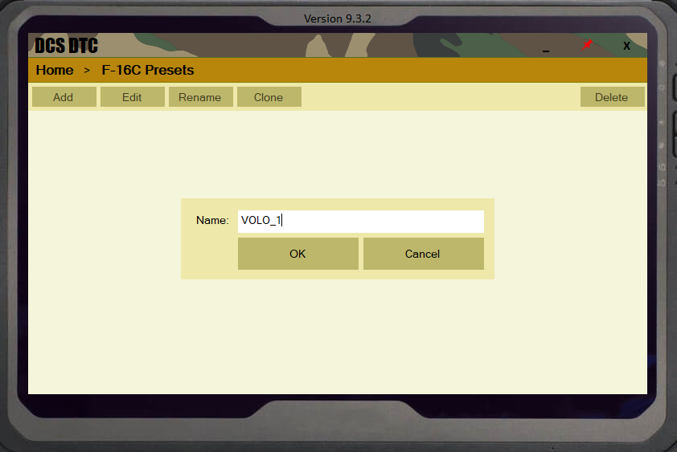
Configurazione nome del piano di volo.
4
Importa waypoint e mission data
Importa i dati missione condivisi nel briefing:
waypoint, steerpoint, target area e flight plan.
In alcuni casi il file può essere fornito direttamente
dalla squadriglia.
Controlla sempre coordinate, nomi e ordine degli steerpoint
prima del caricamento finale nel cockpit.
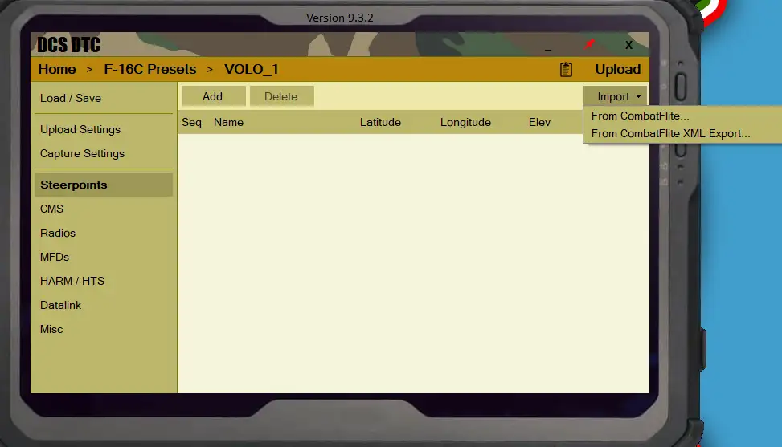
Importazione waypoint e dati missione.
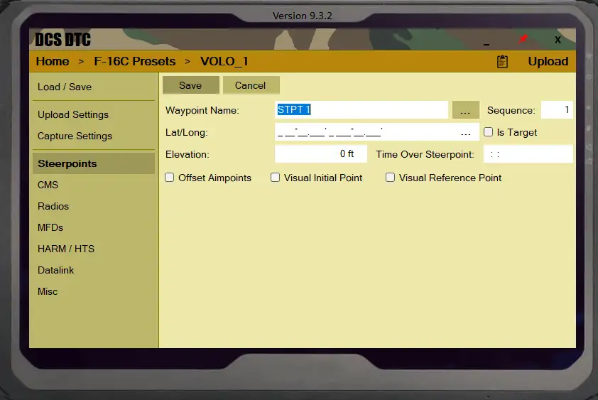
Inserimento manuale e dati missione.
5
Configura radio preset
Inserisci frequenze operative, package frequency,
canali COM1 e COM2 indicati nel briefing.
Questo permette di avere radio già pronte
all’ingresso in cockpit.
Nei voli multiplayer è consigliato controllare
sempre frequenze tactical, AWACS, tanker e package common.
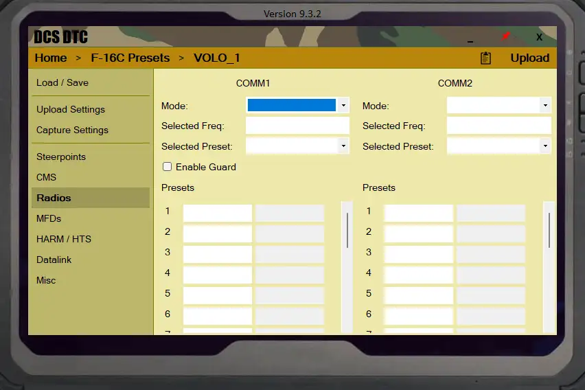
Radio preset e frequenze operative preconfigurate.
6
Configura CMS e impostazioni operative
Nei moduli compatibili puoi preparare programmi
chaff,
flare,
configurazioni CMS e altri parametri operativi
prima del volo.
Verifica sempre che i programmi CMS siano coerenti
con il tipo di missione e con le minacce previste.
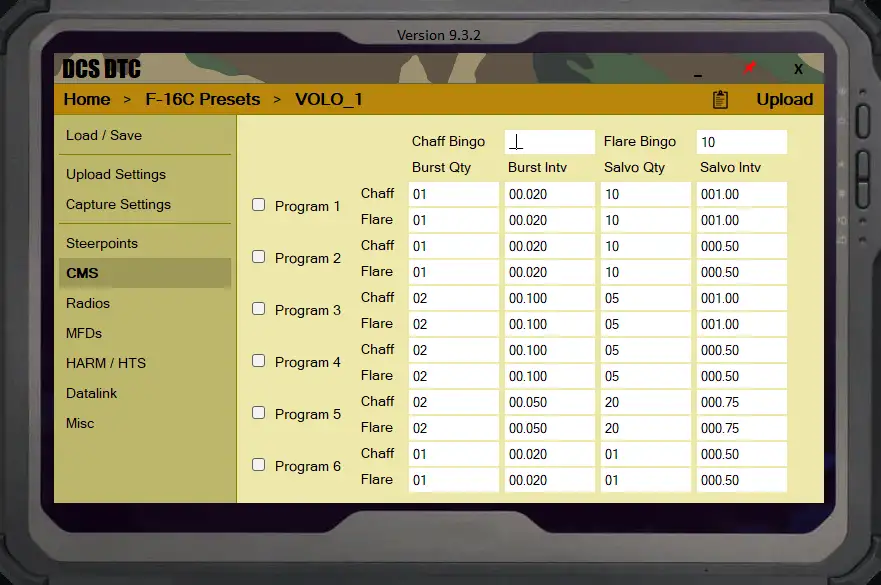
Setup CMS e programmi countermeasures.
7
Controllo impostazioni di importazione
Una volta completato, salva correttamente il file
e prima del decollo verifica che waypoint,
radio preset, CMS e dati operativi siano corretti
e che le impostazioni di importazione siano giuste.
In caso di dubbi o dati mancanti,
confrontati con il flight lead prima del taxi.
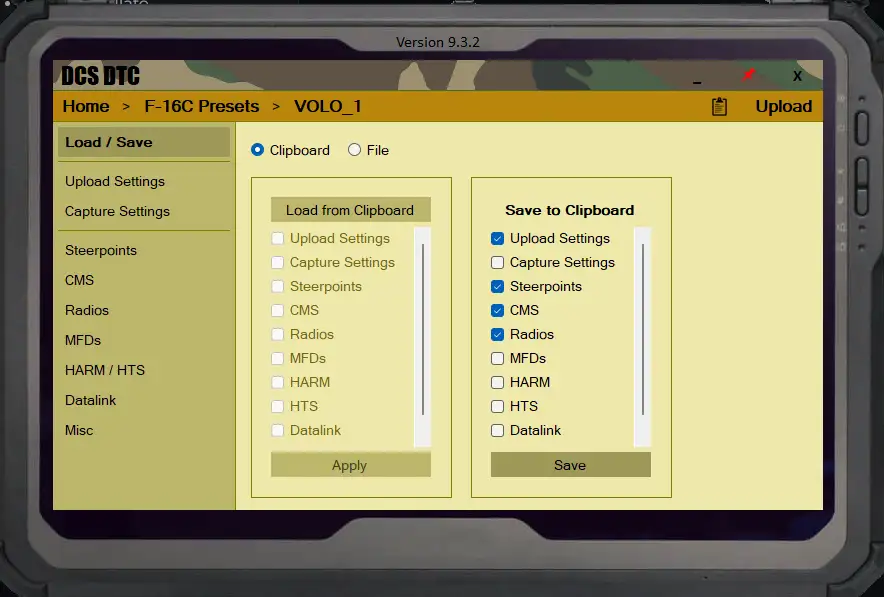
Salva il piano di volo prima della missione.
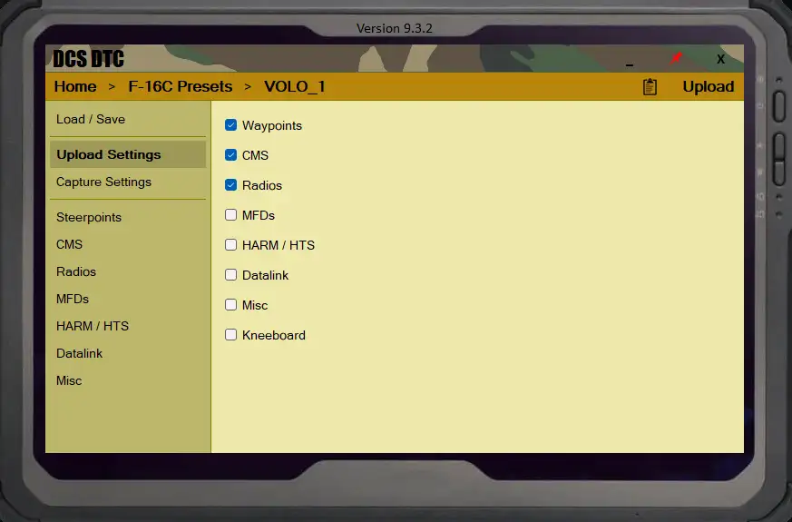
Controllo finale impostazioni di importazione DTC prima della missione.
8
Carica i dati nel cockpit
Avvia DCS ed entra nel modulo selezionato.
Utilizza la procedura prevista dall’aereo
per caricare i dati del DTC nel cockpit.
Alcuni moduli permettono il caricamento automatico,
altri richiedono azioni manuali tramite ICP,
UFC o MFD.
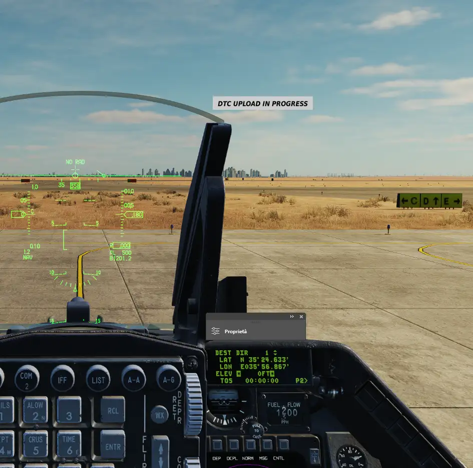
Upload dei dati missione direttamente nel cockpit.